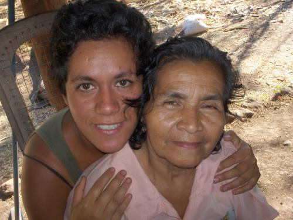

Navigation

User login
About Sally Pistachio
Sally Pistachio embraces absurdity and explores the galaxy with swift glances and her shoulder to the wheel. In the fine print: People, humor, plants, travel, medicine, and culture at large. Originally from Idaho, Ms. Pistachio currently resides in New Orleans, Louisiana.
Field Glossary

English-Spanish Dictionary for Sustainable Agriculture
Chicken-Achiote Stew with a Volcano Elf
by Sally Pistachio
Meeting an elf has always been a sincere desire of mine. I could have sworn I caught a glimplse of one, on a spring morning while traipsing through thick patches of morel mushrooms on the north Olympic Peninsula. But as I recall it, the character in question was in fact a soggy ponderosa pine burl that had crinkled features and a pine needle moustache that could have easily resembled the small stature and face of a surly old elf. Other than seeing them portrayed in films as the large-hearted, tiny-framed heroes that guide protagonists on beautiful white stallions across harrowing crags into fields of emeralds, reading
about them in fantasy novels, and discovering their resemblances in nature, I've never officially been acquainted with a representative of the elfin kind. Never, that is, until this year. After my second trip to Ometepe Island, Nicaragua, I can profess to the world that an elf lives on that magical island in the middle of Lake Nicaragua, and I had the good fortune of making her acquaintance. She is the absolutely beautiful Doña Soccoro of Las Cuchillas, a tiny village located atop Volcano Maderas. Besides being an elf, she is also the mother of twelve children, can hunt, gut, and roast an armadillo, and carry several pounds of produce on her head for miles. These may not be magical standards for most Elfin-lore addicts, but wait, I'll tell you more.
The first time I met Doña Soccoro, (the locals call her Coco), I recall leaning down to embrace her 4'8" frame. She grappled my face in her tiny child-like hands and kissed me. The backs of my knees began to quiver and my cheeks grew hot. I quickly found a chair and a small glass of rum to calm my nerves. This woman invigorated me with her presence, kindness, and grace to the point I felt faint.
Each day Doña Coco marches a total of two hours up and down an inactive volcano shrouded with Chagüitón and banana trees. A pink plastic bucket full of chayote, bananas, or perhaps the prized island cacoa, teeters atop her small frame, at times weighing over thirty pounds.
This feat alone proves that Coco is perhaps the healthiest old soul I've ever met. One afternoon while preparing a green papaya salad for a delicious lunch, I glanced at Coco's feet. Painful, scabbed and dried from the eighty years of hauling children, supplies, and food up and down the volcano, they didn't seem to bother her, although to the average person, feet in that condition would be unbearable. But she's a remarkable woman, and has a different tolerance level, I suppose.
Before the trip to Ometepe I prepared gifts for all the beautiful encounters I was sure to have. I remembered the small bottle of solar-infused mugwort oil I brought. Harvesting bushy, fragrant mugwort plumes from the Umpqua river in southern Oregon one summer, I never thought I'd be giving the fruits of my oily labor to a wise old Nicaraguan elf-woman with magical (but tremendoulsy dry) feet. She giggled and didn't say too much when I gave her the bottle, but I could tell that she was appreciative of the soothing medicine.
One afternoon Doña Coco invited me up to her home on the volcano. With my companions Juana and Kristofino, we ambled up Maderas in the heat of the day, foolishly. I always noted how Doña made her way up and down the volcanos early in the morning or late in the evening in order to avoid dehydration and exhaustion. After an hour of heaving our hung-over bodies up the side of Maderas (we'd been dancing all night at an epic party at another farm) we finally found Doña Coco...washing clothes out at her pila (a concrete basin filled with water). Two of her sons, Francisco and Gabriel, welcomed us with jugo de piña. Coco would later tell us the story of each board of her home being hauled up the side of Maderas by all the people of the village.
After relaxing and telling stories, Doña Coco calmly retreated outside, her hogs, dogs, chickens, cats, and duck following her. A moment later she walked through the door with a chicken, its feet bound and it's neck
wrung, stretched about 2 feet. She immersed the dead chicken in a boiling pot, and what seemed like moments later, had prepared an incredible chicken stew, with onion, garlic, and ground achiote, a small red seed used for spice many Nicaraguan dishes.
The tranquil afternoon came to an end, I said my goodbyes to Doña Coco, although her elfin presence still tickles the dusty corners of my memory. She continues to bring intense love to the Ometepinos today.
- Sally Pistachio's blog
- Login to post comments